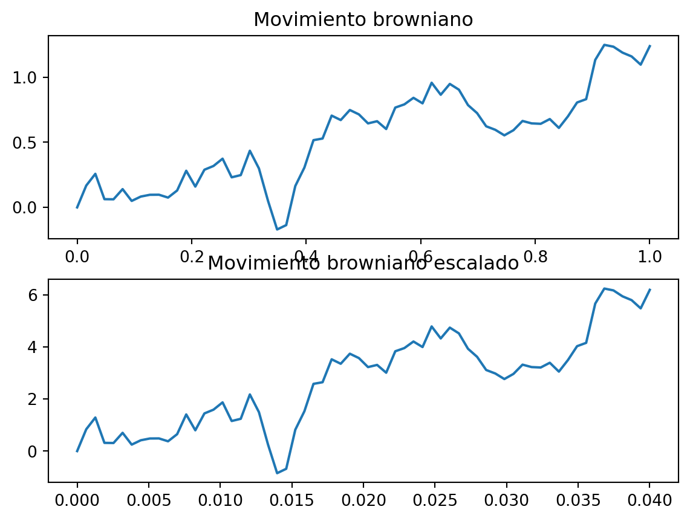

Sea \(W(t)\) un movimiento Browniano estándar en \([0,T]\). Pruebe que para cualquier \(c>0\) fijo, \[
V(t) = \dfrac{1}{c} W(c^2 t)
\]
es un movimiento Browniano sobre \([0,T]\).
5.0.1 Demostración
Demostraremos que \(V\) cumple las propiedades del movimiento Browniano.
5.0.1.1 Propiedad 1
Es claro que \(V(0) = \dfrac{1}{c} W (c^2 0)=0\).
5.0.1.2 Propiedad 2 (Incrementos Independientes)
Sean \(s<t<u<v\) tenemos que \[
E[\left(V(t)-V(s)\right)\left(V(v)-V(u)\right)]=\dfrac{1}{c^2}E[\left(W(c^2 t)-W(c^2 s)\right)\left(W(c^2 v)-W(c^2 u)\right)]
\]
Como el browniano tiene incrementos independientes. \[\begin{align*}
\dfrac{1}{c^{2}}E\left[\left(W(c^{2}t)-W(c^{2}s)\right)\left(W(c^{2}v)-W(c^{2}u)\right)\right] & =\dfrac{1}{c^{2}}E\left[\left(W(c^{2}t)-W(c^{2}s)\right)\right]E\left[\left(W(c^{2}v)-W(c^{2}u)\right)\right]\\
& =0
\end{align*}\]
5.0.2 Por lo tanto, \(V\) es un movimiento browniano.
Hacer un script para ilustrar la propiedad de escalado del movimiento Browniano para el caso de \(c = \dfrac{1}{5}\). Estar seguro que usa el mismo camino browniano discretizado en cada subplot.
El código, se encuentra en hw4_p2.py. Pero aquí se muestran los resultados.
# Importamos las librerias necesarias import numpy as npimport matplotlib.pyplot as plt# Comenzaremos simulando el movimiento browniano fuerte.prng = np.random.RandomState(10) # Fijamos la semilla. t_final =1# Extremo derecho del intervalo [0,T]n_points =64# No olvidemos que aquí se incluye el 0 y t.dt =1/ (n_points -1) # Ajuste al delta tdw = np.sqrt(dt) * prng.standard_normal(n_points -1) # Calculamos los incrementos.w = np.concatenate(([0], dw.cumsum()))time = np.linspace(0, t_final, n_points) # Vector de tiempo.# plt.plot(time, w) Graficamos el browniano base.# plt.show()"""Ahora, comenzamos con el browniano escalado. """c =0.2# 1/5"""Esto tiene dos interpretaciones. Sin embargo, para este ejercicio debemos partir de una trayectoria dada, entonces haremos la transformación. """c_time = c**2* time # Transformamos el intervalo del tiempoc_w = c**(-1) * w # Escalamos el browniano. print("El valor de c es ",c)fig, cbrown = plt.subplots(2)cbrown[0].plot(time, w)cbrown[1].plot(c_time, c_w)cbrown[0].set_title('Movimiento browniano')cbrown[1].set_title('Movimiento browniano escalado')plt.show()
El valor de c es 0.2

Modifique el script half_brownian_refinement.py encapsulando el código en una función. Esta función deberá recibir el extremo derecho del intervalo \([0, T]\) y el número de incrementos \(N\) de un camino browniano base. El propósito es calcular los incrementos de relleno de una refinamiento con \(2N\) incrementos.
import numpy as npimport matplotlib.pyplot as pltprng = np.random.RandomState(10)def refined_brownian_2n(T,L): dt = T / L W = np.zeros(L +1) W_refined = np.zeros(2* L +1) xi = np.sqrt(dt) * prng.normal(size=L) xi_half = np.sqrt(0.5* dt) * prng.normal(size=L) W[1:] = xi.cumsum() W_ = np.roll(W, -1) W_half =0.5* (W + W_) W_half = np.delete(W_half, -1) + xi_half W_refined[1::2] = W_half W_refined[2::2] = W[1:] t = np.arange(0, T + dt, dt) t_half = np.arange(0, T +0.5* dt, 0.5* dt)return t, t_half, W, W_refined
En un script separado, incluya la función de arriba y grafique una figura con la trayectoria del browniano con 100 incrementos y muestre su refinamiento correspondiente.